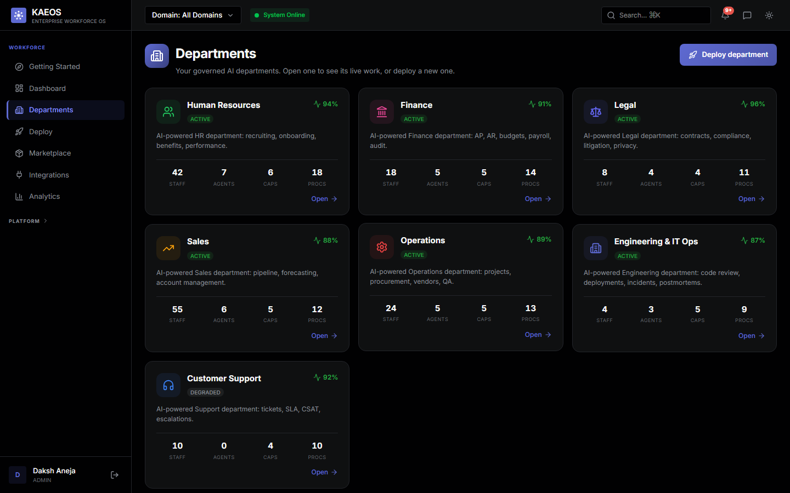
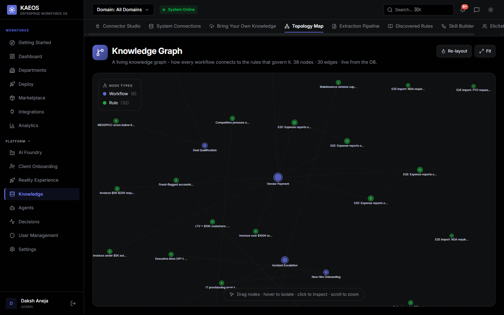
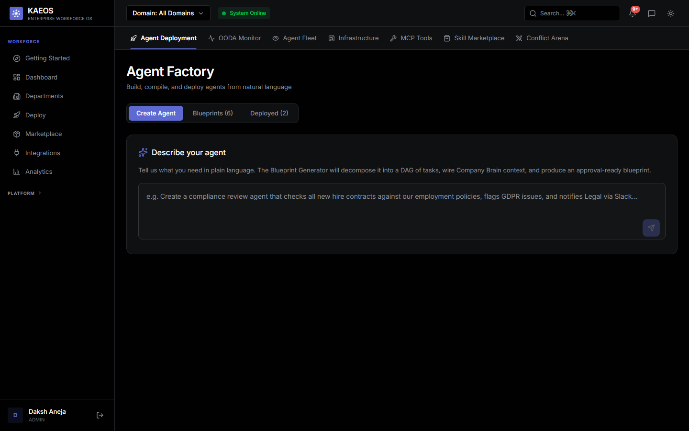
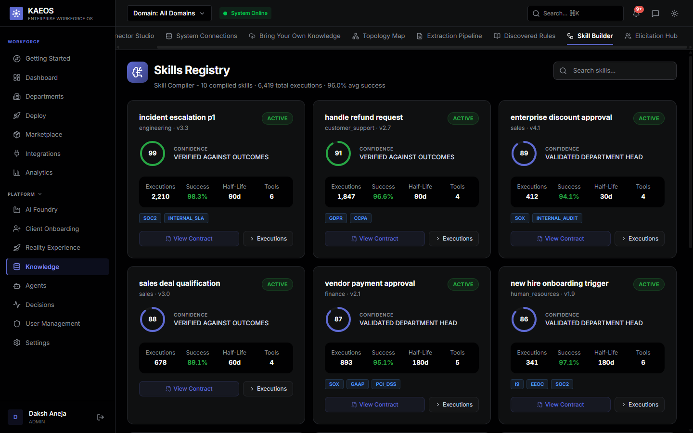

It reads like chaos. It is the opposite. Autonomous AI departments for
every function and every regulated industry, that act on their own only when
they have proven they can, with a signed audit trail for every decision.
The share of work that ran autonomously, with no human gate and a signed
audit trail. One north-star number, computed from real executions, that the
whole platform optimizes.
0
AI Departments
0
Agents on Duty
0
Governance Gates
0
E2E Tests
0
Invented Numbers
The Product
One brain. Ten departments. Zero blind trust.
Enterprise agent pilots fail for a predictable reason: nobody can say, with evidence, when
an agent should be allowed to act on its own. KAEOS answers that with a live org graph,
pre-built AI departments spanning every business function and every regulated industry, and
a governance spine that turns "trust me" into a number you can audit.
1Governed Autonomythe category we define
2Department-as-a-Servicewhat you buy first
3Company Brainwhat you grow into
A living Company Brain
Departments, agents, skills, employees, vendors, contracts and incidents form one force
graph built from your own records. The Neural Map renders it alive: drop a document or
speak a note into the brain and the Copilot cites it seconds later.
Governed autonomy
Compliance, fairness, confidence, human-in-the-loop, adversarial debate, execution and a
hash-chained audit ledger. Seven gates on every decision, and nothing high-consequence
ships without a human, no matter how confident the model claims to be.
One honest metric
The safe-autonomy rate: the share of work completed cleanly without a human, computed
live from real executions. It is the north star the whole platform optimizes, and it only
ever moves on evidence.
The Governed Departments
Ten departments. Every one born governed.
Department-as-a-Service is what you buy: a function that arrives with its own statutory
checkers already wired into the compliance gate. Banking-lending is only our internal
beachhead. The same spine governs every business function and every regulated industry.
HR
Hiring, reviews and policy, screened for adverse impact before any action lands.
EEOCFour-FifthsADA
Finance
Close, accruals and reporting under SOX controls and segregation of duties.
SOXGAAPSoD
Legal
Contract review and retention with privilege preserved end to end.
PrivilegeRetentionReview
Sales
Quotes, discounts and outreach inside anti-bribery and fair-dealing limits.
FCPAFair-DealingDiscount-Auth
Support
Tickets and responses with PII redacted and consent respected.
GDPRCCPAPII-Redact
Operations
Change-control, SLAs and incidents, each with a full audit trail.
Change-ControlSLAIncident-Log
Engineering & IT-Ops
Access reviews and changes evidenced against SOC 2 and ISO 27001.
SOC 2ISO 27001Access-Review
Healthcare
PHI workflows held to HIPAA and 42 CFR Part 2 minimum-necessary rules.
HIPAA42 CFR Part 2Min-Necessary
Procurement
Purchase orders through 3-way match, segregation of duties and OFAC screening.
3-Way-MatchSoDOFAC
Banking-Lending
Credit and collections under ECOA, TILA and FDCPA, tested for fair lending.
ECOAFour-FifthsTILAFDCPA
Every chip is a live checker. Each label is a statutory rule enforced at Gate 1,
the compliance gate, before an agent is allowed to act. Change the department and the checkers
change with it, the governance spine underneath stays identical.
The Governance Spine
Seven gates. Now measured to the millisecond.
Every decision walks this pipeline, in order, every time. As of v1.9.0 each gate records its
wall-time lap, independent gates run in parallel, and the adversarial debate earns its length:
a second round runs only when the arbiter is genuinely contested.
1
Compliance
Regulated tags checked before anything runs
2
Fairness
Protected attributes scored, in parallel with Gate 1
3
Confidence
Capped at the model's measured ceiling
4
Human Gate
High-consequence actions always reach a person
5
Debate
Proposer vs advocate, arbitrated; round two only if contested
6
Execution
Governed writes that fail closed if they don't land
7
Audit
Hash-chained, signed provenance for every outcome
>decision walking the pipeline
Measured on a real local model: a contested SOC2 decision ran both debate
rounds and correctly escalated to a human, while the fairness gate cost 3 milliseconds of
wall-time by running under compliance's model call. Decisive debates finish in 3 reasoning
calls instead of 5. Ask the API yourself: GET /metrics/latency
The Differentiator
Your model earns a ceiling. Every decision lives under it.
Bring any model, OpenAI, Anthropic, Mistral, Groq, Azure, or a self-hosted Ollama, and
KAEOS probes it: JSON discipline, multi-step reasoning, strict instruction following.
The probe produces a confidence ceiling that caps every decision the platform makes on
that model. A weaker model mechanically routes more work to humans. Model choice becomes
a governance dial, not a gamble.
Fails closed. If the ceiling lookup itself fails, a conservative failsafe cap routes decisions to a human until it recovers.
Enforced in the pipeline itself. Every domain agent inherits the ceiling at Gate 3, not just the API routes.
Data residency respected. Local-only mode strips every cloud model from the routing chain so PII never leaves the region.
LIVE EXAMPLE - phi4-mini PROBES AT 0.70
MEASURED CEILING: 0.70
Skill's claimed confidence0.94
Effective confidence (capped)0.70
Autonomous execution threshold0.82
SUCCESS_CLEAN→PENDING_HITL
The identical skill flips to human review on the weaker model. Swap in a stronger one and autonomy returns.
Real Product, Real Data
Captured from a running instance.
Every frame below is the live app on a seeded demo tenant against PostgreSQL, not a mockup,
not a design comp. The honesty of the numbers is the product.

AI DepartmentsDepartments with live health, agents and task countsDecision QueueEvery paused decision, waiting for a human verdict

Company BrainThe org as a living knowledge graphReality TwinA DB-backed twin of the whole organization

Agent FactoryBlueprint, compile, deploy - agents as governed artifacts

Skills RegistrySkills that earn and lose confidence by outcome
What We Refuse to Fake
Where a true number is not measurable, you get nothing instead of fiction.
RETURNS NULLHours saved and cost reduction
They require a human-baseline duration per skill, a tenant input KAEOS cannot measure. They
used to be "computed" by multiplying executions by hardcoded constants. Invented numbers are
worse than absent ones, so they are absent.
PUBLISHES LOSSESBenchmarks report the misses too
On the real-data benchmark some domains land at or below the naive baseline, and those
results ship transparently in the docs, not spun as wins.
CANNOT PROMOTESimulated evaluations are structurally inert
A Foundry evaluation that ran without a live provider is flagged simulated and can never win
or drive a model swap. A fabricated score must never change production routing.
ABSENT BY DESIGNThere is no fake trainer
The Foundry orchestrates fine-tuning but the weight-training step is external and pluggable,
and the product says so plainly rather than shipping a pretend one.
Shipping Record
Seven releases in five weeks.
Every release tagged, documented and CI-verified. The full story lives in the changelog.
v1.9.0
v1.9.0Fast Lane - the performance release
Per-gate latency instrumentation, contested-only debate rounds, parallel gates, a
stale-while-revalidate client cache, and four releases' worth of red CI turned green.
v1.8.0
v1.8.0Neural Map - the company becomes a living map
An Obsidian-style force graph of the whole org, agent dossiers with an autonomy ladder,
voice-and-drop ingestion into the brain, and a live chain-of-command hierarchy.
v1.7.0
v1.7.0Pioneer Lab - the frontier console
Five experimental lanes in one console, plus a product-wide local-LLM timeout fix that was
silently degrading every local call.
v1.6.0
v1.6.0Living Surface - the UI comes alive
Tenant-aware LLM routing with embedding provenance, and a premium live surface: count-ups,
humanized copy, 20-second refresh everywhere.
v1.5.0
v1.5.0Federated Front Door - enterprise entry
Real signature-verified SAML 2.0 SSO, self-service platform administration, and a
production Helm chart.
v1.4.0
v1.4.0Provable Trust - evidence over claims
Privacy and compliance surfaces wired to real controls, and one canonical definition of the
safe-autonomy metric across every surface.
v1.3.0
v1.3.0Gate Integrity - the pipeline hardened
Evidence-based human pre-approval, fail-closed confidence gates, and an audited exception
path for every governance failure.
Run It Yourself
Three commands to a running company.
git clone https://github.com/Daksh-Aneja-Projects/KAEOS.git && cd KAEOS
cp .env.example .env # set DEV_MODE=true for a local trial
docker compose up --build